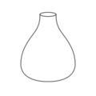

Atelier de modelage
- Tarif
- 70 €
- Durée
- 3 h
Le modelage est l’une des techniques de la poterie. On sculpte les objets avec nos mains et des outils à l’aide de plusieurs techniques. Je vous accompagne dans la création de vos pièces, je vous donne des inspirations si besoin ou je vous aide à façonner vos idées et projets personnels. Un atelier dure 3h.
Vos pièces sèchent jusqu’à 2 semaines à l’atelier puis je les cuis une première fois.
Les pièces sont alors à l’état de biscuit. Il faut ensuite les émailler : appliquer la couche qui donne la couleur et la brillance aux objets de céramique.
2 options : je les émaille pour vous en transparent (compris dans le prix de l’atelier modelage). Le résultat donne une couleur entre le blanc cassé et le beige comme ici
Ou alors vous pouvez venir faire une séance d’émaillage pour peindre vos pièces vous-même ;)